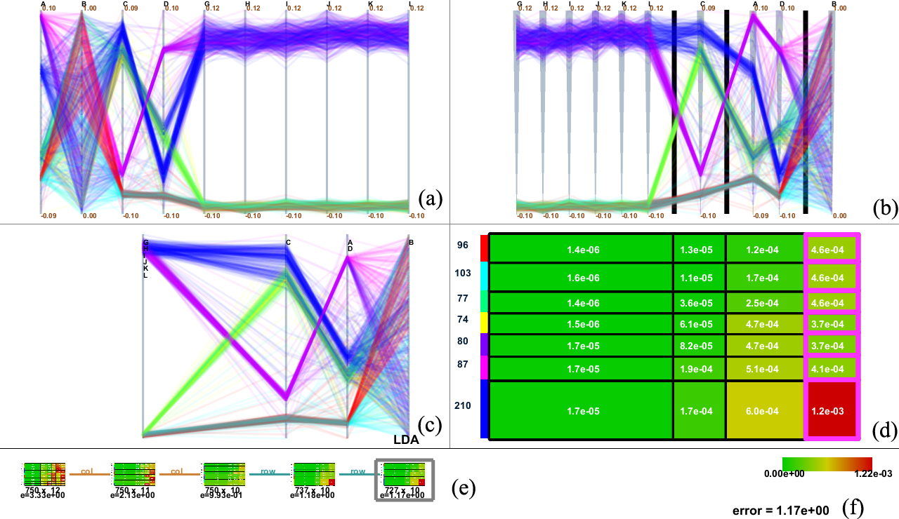

|
This web page is prepared for providing research materials of our biclustering approach for extracting correlated feature subspaces. |
Asymmetric Biclustering Approach
Exploring feature subspaces is one of promising approaches to analyzing
and understanding the important patterns in multivariate
data. If relying too much on effective enhancements in manual interventions,
the associated results depend heavily on the knowledge
and skills of users performing the data analysis. This paper presents
a novel approach to extracting feature subspaces from multivariate
data by incorporating biclustering techniques. The approach
has been maximally automated in the sense that highly-correlated
dimensions are automatically grouped to form subspaces, which
effectively supports further exploration of them. A key idea behind
our approach lies in a new mathematical formulation of asymmetric
biclustering, by combining spherical k-means clustering for
grouping highly-correlated dimensions, together with ordinary kmeans
clustering for identifying subsets of data samples. Lowerdimensional
representations of data in feature subspaces are successfully
visualized by parallel coordinate plot, where we project
the data samples of correlated dimensions to one composite axis
through dimensionality reduction schemes. Several experimental
results of our data analysis together with discussions will be provided
to assess the capability of our approach.
|
|
 Figure 1: Screenshot of our system interface for finding correlated subspaces based on biclustering. |
Results
Here, we present several results that are generated from our prototype system.
(You can click the thumbmail image for that of the original resolution.) |
Paper & VideoKazuho Watanabe, Hsiang-Yun Wu, Yusuke Niibe, Shigeo Takahashi, and Issei Fujishiro, Manipulating Bilevel Feature Space for Category-Aware Image Exploration, Biclustering Multivariate Data for Correlated Subspace Mining, in Proceedings of the 8th IEEE Pacific Visualization Symposium (PacificVis 2015), pp. 287-294, 2015. Paper-preprint (PDF, 8.7MB), Video(MOV, 19.3MB) |
{kind=link}